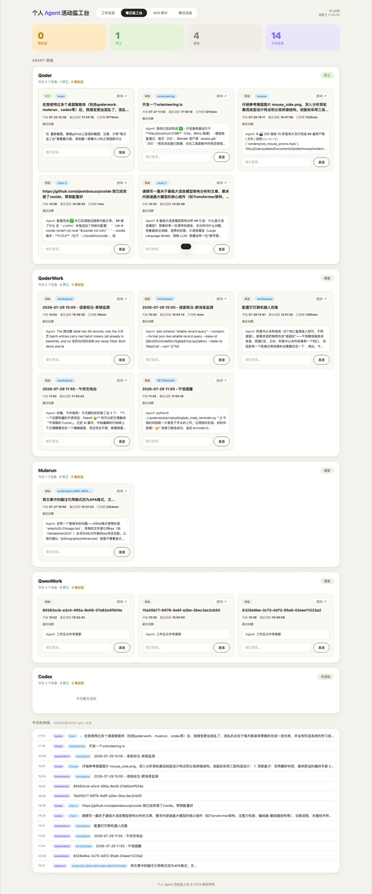
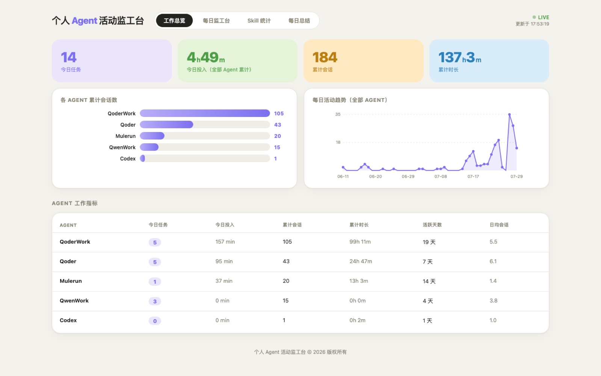
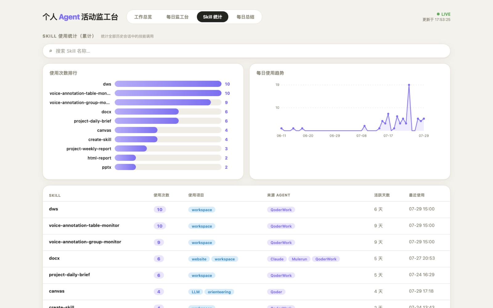
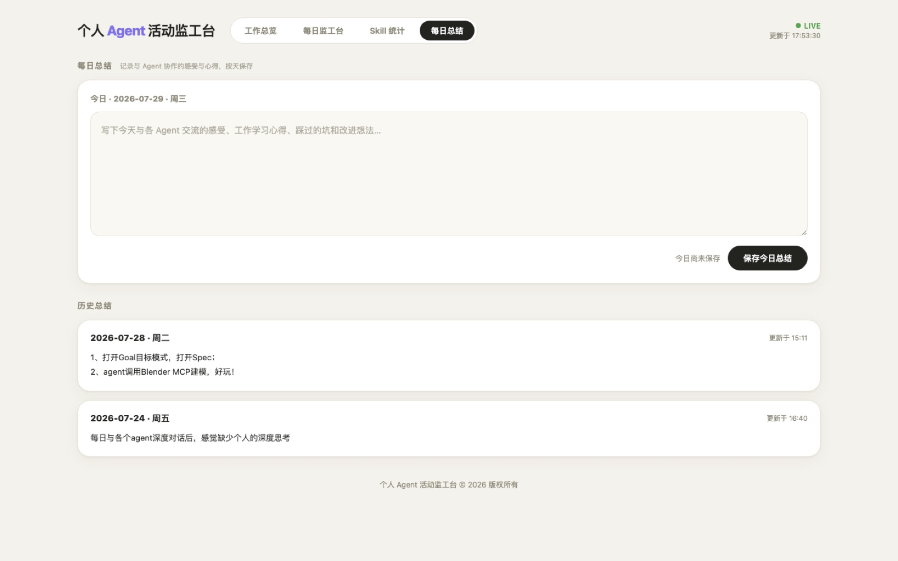

网页 / APP · 03
个人 Agent 活动监工台
当同时使用五个桌面 AI Agent 时，最大的浪费不是算力，而是“不知道谁在等我回话”。 这是一个跑在本地的仪表盘，把散落在各处的会话数据收拢成一块可以一眼看懂的看板。
- 年份
- 2026
- 角色
- 独立开发
- 技术
- Python 标准库 · AppKit
- 形态
- 桌面 App + 网页版

每日监工台：三态统计卡 + Agent 班组任务卡片 + 今日时间线
起因与思路Overview
我平时会同时开着 Codex、QoderWork、Mulerun、Qoder、QwenWork 五个桌面 Agent 干活。 问题很快出现：它们各自把会话记录写在不同格式的文件里， 有的是 SQLite，有的是 JSONL，有的干脆是一堆目录。 我必须一个个点开窗口，才能知道哪个还在跑、哪个已经停下来等我确认。
于是我把它抽象成一个工地的隐喻：每个 Agent 是一个工人， 我是监工。工人只有三种状态——开工（正在执行）、 等回话（需要我介入）、摸鱼（空闲）。 界面要做的事只有一件：让“等回话”的那几个立刻跳出来。
核心功能
- 多 Agent 状态监控：轮询五个数据源，三态判定，2 秒刷新
- 会话分类与时间线：按 Agent 分组的任务卡片 + 今日活动时间线
- 发话功能：在浏览器里直接给 Agent 发消息（Codex CLI 直接注入，其余通过剪贴板 + 深链 + 按键）
- Skill 统计：扫描全部历史会话中的技能调用，排行柱状图 + 每日趋势 + 搜索过滤
- 工作总览：累计会话数、工作时长、活跃天数与各 Agent 对比
- 每日总结：按天记录与 Agent 协作的心得，可编辑历史条目
- 深链跳转与别名：一键跳到对应会话窗口，可给每个 Agent 起昵称
界面一览Screens



技术实现Process
零依赖的服务端
整个后端只用 Python 标准库实现，不引入任何第三方包——
这样任何一台装了 Python 3.9+ 的 Mac 都能 python3 server.py 直接跑起来，
不需要处理虚拟环境和依赖冲突。
多格式数据源适配
为 SQLite、JSONL、目录扫描三类数据源分别写解析器，对上层暴露统一的会话模型。 读取时做增量缓存，避免每次轮询都重新解析全部历史文件。
三态判定规则
结合最后一条消息的角色与时间差判断状态： Agent 刚发言且在等待输入判为“等回话”，持续产出判为“开工”， 长时间无动作判为“摸鱼”。前端每 2 秒刷新一次。
发话通道
Codex CLI 支持真实注入；其余 Agent 没有开放接口， 于是走“剪贴板写入 + 深链唤起窗口 + 模拟按键粘贴回车”的组合方案， 并封装成需要辅助功能授权的 SendHelper.app。
双形态与保活
同一套服务与数据支撑两种形态：AppKit + WKWebView 的原生窗口版， 以及浏览器访问的网页版。注册为 launchd 服务后可开机自启、崩溃自动重启， 运行数据独立存放，升级 App 不丢历史。